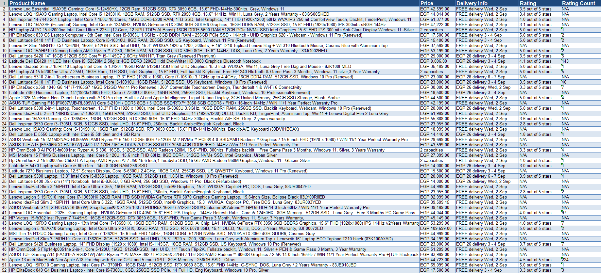
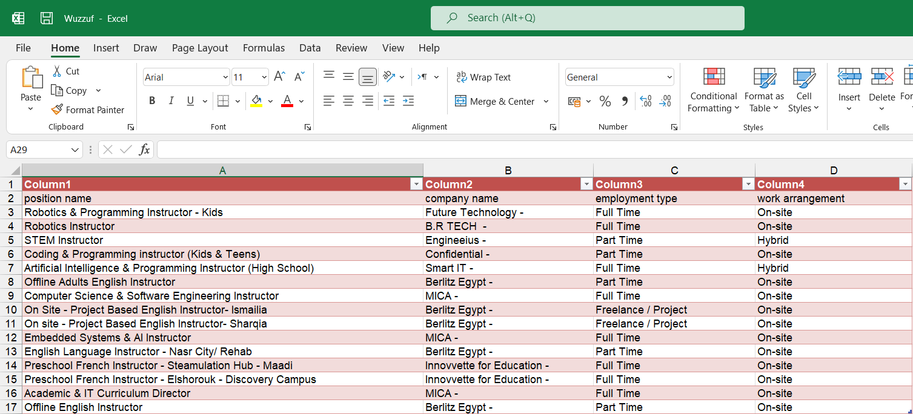
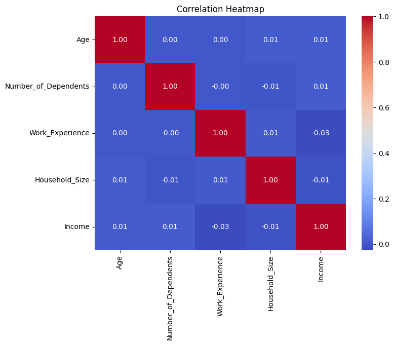
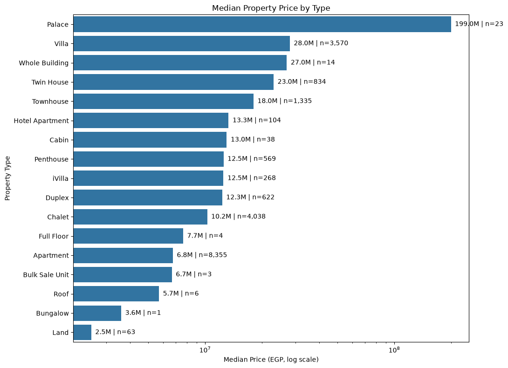

You Have the Data. But What Comes Next? I believe the real value of data isn’t simply knowing what happened — it’s understanding why it happened, what it means, and what decision you can make from it.
I’m Mary George, an AI & Data Science student passionate about using data to solve real-world business problems and turn complex information into clear, actionable insights. My journey began when I joined the Faculty of Computers and Artificial Intelligence, specializing in AI & Data Science. Since then, I’ve been continuously developing my skills through academic learning, the Digital Egypt Pioneers Initiative (DEPI), and hands-on projects that allow me to apply what I learn to practical problems. What sets my approach apart is that I don’t want to stop at writing code or presenting numbers. I focus on understanding the problem behind the data, exploring what the numbers mean, and communicating insights in a way that can support better decisions.
Through my projects, I’ve been building practical experience in Python, data analysis, web scraping, and intelligent data-driven solutions, while continuously expanding my technical toolkit. Whether you have a data-related challenge, a large amount of information that needs to be understood, or an idea you want to turn into a data-driven solution, I’d love to hear about it.Let’s look beyond the numbers — and find out what comes next.
2025 – 2029
Pursuing a B.Sc. in Artificial Intelligence and Data Science, building a robust academic foundation in computer science, software engineering, and core AI principles with an exceptional GPA.
2026 – Present
Selected for the 6-month national scholarship track in Data Science, executing advanced machine learning pipelines and real-world analytical projects.
July 2026 - August 2026
Completed intensive practical training focused on data workflows, business analysis, and generative AI applications.
Writing clean and efficient Python scripts for automation, data processing, and solving complex programming problems.
Applying core programming concepts, data structures, algorithms, and logical problem-solving through competitive programming.
Cleaning, transforming, manipulating, and analyzing datasets while performing efficient numerical and data operations.
Exploring datasets to identify patterns, trends, relationships, distributions, and anomalies and extract meaningful insights.
Creating clear and informative visualizations to explore data patterns, compare values, understand distributions, and communicate analytical findings using Matplotlib and Seaborn.
Writing efficient SQL queries, filtering and aggregating datasets, and managing relational databases using SQL Server (SSMS) and SQLite.
Handling missing values, correcting data types, standardizing formats, and preparing raw datasets for accurate and reliable analysis.
Extracting live data from websites using BeautifulSoup and Selenium and exporting structured information into Excel and CSV files.
Building structured and responsive web pages using HTML5, CSS3, and Tailwind CSS.
Using PyCharm, VS Code, Google Colab, Jupyter Notebook, Git, and GitHub to develop, organize, and manage projects efficiently.
Continuously developing technical knowledge through intensive programs, specialized learning paths, and practical projects.
Working effectively within teams and communicating technical ideas clearly through internship and academic project experience.
Applying structured analytical thinking to break down complex technical challenges and develop practical solutions.
Effectively managing multiple learning tracks, projects, and responsibilities while maintaining consistent progress and performance.
Khamsat, Kafil, Nafezly, Freelancer & Fiverr
2026 – Present
Providing automated data-driven solutions, including web scraping scripts, data cleaning with Pandas, and structured dataset formatting for clients across multiple global and regional freelance platforms.
I build custom automated scraping scripts using Python, BeautifulSoup, and Selenium to extract targeted data from live websites or platforms (like e-commerce, job portals, or directories).
A structured, ready-to-use Excel/CSV file containing all requested scraped data, clean and organized according to your exact requirements.
I write optimized SQL queries, design database structures, and manage datasets using SQL Server (SSMS) to retrieve, filter, and aggregate data efficiently.
Clean, well-structured SQL scripts, query result reports, and organized data tables ready for analysis or database integration.
I analyze complex datasets to uncover hidden patterns, trends, and correlations using Python, Pandas, NumPy, Seaborn, and Matplotlib within Google Colab or Jupyter Notebook.
A comprehensive exploratory data analysis report accompanied by high-quality statistical visualizations, distribution plots, correlation heatmaps, and actionable business insights.
I clean and preprocess messy raw datasets by handling missing values, standardizing formats, correcting data types, and filtering outliers using IQR bounds.
A pristine, structured, and error-free dataset (Excel, CSV, or SQL-ready) fully prepared for advanced analysis or modeling.
I transform technical data analysis and statistical findings into clear, engaging visual narratives and professional presentation decks.
A polished, well-structured presentation deck (using Canva) featuring key insights, visual charts, and executive summaries tailored for stakeholders.

🎯 Situation: Manually gathering product details, prices, and reviews from massive e-commerce platforms like Amazon is time-consuming and inefficient for market analysis.
⚙️ Task: The objective was to build an automated web scraping script to efficiently extract structured product information from Amazon pages without manual intervention.
🛠️ Action: I developed a custom Python script utilizing Selenium to navigate dynamic web pages and BeautifulSoup to parse and extract target product data points, then structured and exported the final output into a clean Excel sheet.
📈 Result: Successfully automated the data collection process, extracted live product details accurately, and delivered a ready-to-use dataset that saves hours of manual work.

🎯 Situation: Manually browsing and gathering relevant job postings and employment details from live career portals is time-consuming for job market analysis.
⚙️ Task: The objective was to develop an efficient web scraping script to extract targeted job listings and employment arrangements automatically.
🛠️ Action: I wrote a custom Python script using Selenium to handle dynamic web elements and BeautifulSoup to parse HTML content from Wuzzuf, organizing the extracted position titles, companies, and work types seamlessly.
📈 Result: Successfully extracted live employment opportunities, exporting them into structured Excel sheets that eliminate manual data entry and streamline market research.

🎯 Situation: Uncovering hidden patterns between individuals' personal backgrounds and their economic status requires deep exploratory data analysis of complex socioeconomic datasets.
⚙️ Task: The objective was to investigate demographic, social, and economic indicators, patterns, and statistical relationships using Python.
🛠️ Action: Performed comprehensive EDA in Google Colab using Pandas & NumPy for data manipulation, and Matplotlib & Seaborn to generate advanced statistical graphs, correlation matrix heatmaps, and distribution box plots.
📈 Result: Successfully highlighted statistical dependencies like work experience and income growth, isolated economic extremes, and identified distinct lifestyle and demographic clusters.

🎯 Situation: Understanding complex pricing trends, valuations, and property distributions across the Egyptian real estate market requires deep data analysis of multi-attribute listings.
⚙️ Task: The objective was to download, clean, preprocess, and perform exploratory data analysis (EDA) on Kaggle real estate listings to extract actionable market insights.
🛠️ Action: Built a robust data cleaning pipeline using Pandas & NumPy to handle missing values, clean price strings, filter outliers via IQR, and extract numeric sizes. Visualized distributions, price vs. size correlations, and median valuations using Matplotlib & Seaborn.
📈 Result: Uncovered right-skewed pricing distributions, verified that median property prices scale significantly with size brackets, and mapped volume variations across different property types.


Have a project in mind or want to collaborate? Feel free to reach out!
Thanks for taking the time to explore my portfolio. Let's build something amazing together!